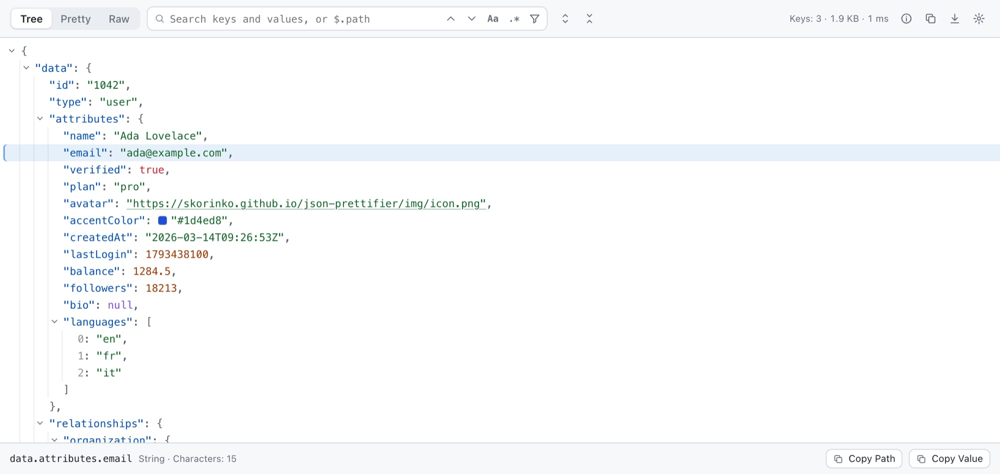
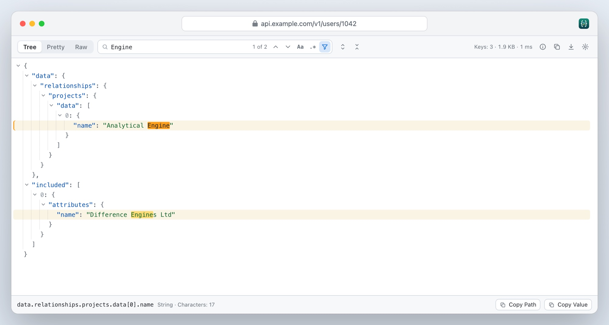
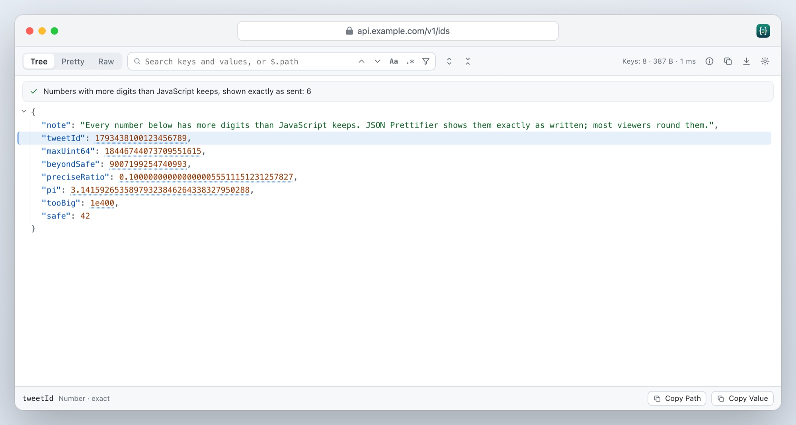
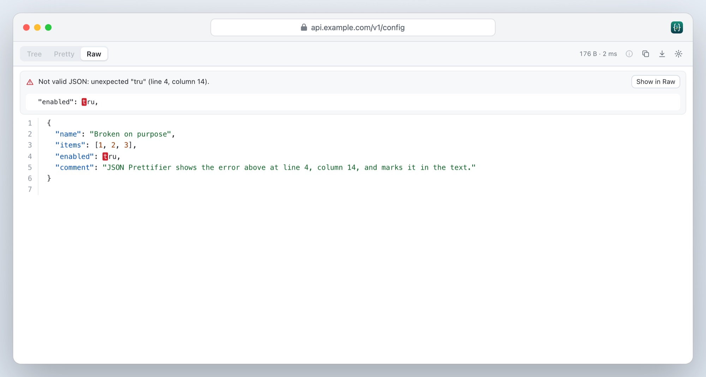
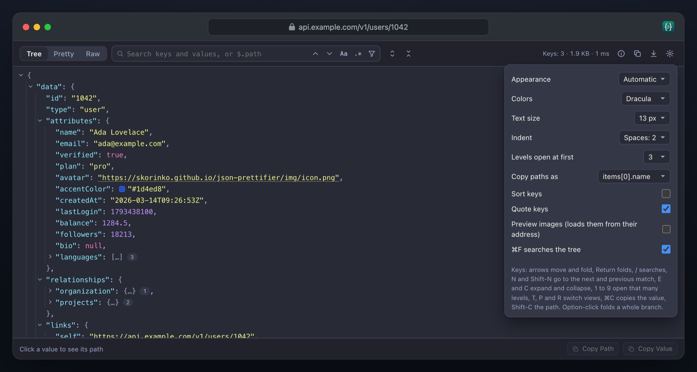

A Safari extension for Mac, iPhone and iPad
A Safari extension for Mac, iPhone and iPad
JSON you can read, exact to the last digit.
Open any JSON address in Safari and see a tree you can fold, search and filter, instead of a wall of text. Large documents open fast, numbers stay exactly as sent, and errors show where they are.
€1.99 once, for Mac, iPhone and iPad · macOS 12 and iOS 16.4 or later · No data collected

Open, click, read
No account, no setup, and no access to your websites unless you want it.
1. Open JSON
Any address that answers with JSON: an API, a file on GitHub, a config. Safari shows it as text.
2. Format it
Click JSON Prettifier in the toolbar, then Format This Page, or press ⌃⇧J. Or let it format every JSON page by itself.
3. Find what you need
Fold, search, filter and copy. Click a value to see its path, and copy either one.
Made for the JSON you actually get
Large, deeply nested, sometimes broken, and full of IDs that don’t fit in a double.
Search
Find anything, fast
Every key and value is searched as you type, with each match marked. Step through them, or keep only the matches and the way to them.
- Match case, or use a regular expression
- JSONPath queries such as
$..book[?@.price < 10].title - Searching never freezes the page, even on large documents

Exact
Never loses a digit
Most viewers read numbers the way JavaScript does, so 9007199254740993 quietly turns into 9007199254740992. JSON Prettifier shows every number exactly as it was sent.
- 64-bit IDs, long decimals and huge exponents, digit for digit
- Keys in the order the server wrote them
- Repeated keys pointed out, with Document Info for counts and anything unusual

Errors
Broken JSON, explained
When a document isn’t valid, you see what’s wrong and where: the line and column, the line itself, and the whole text with the place marked.
- JSON Lines, with unreadable lines shown in place
- JSONP, and prefixes like
)]}'that protect APIs - Comments and trailing commas read, with a copy as strict JSON

Yours
Your colors, your keys
Light, dark or automatic, in four themes, at the text size you like. On a Mac, the keyboard does everything.
- GitHub, Solarized, Dracula and Nord
- Paths copied for JavaScript, JSONPath, jq or JSON Pointer
- Arrows move and fold, / searches, 1 to 9 open that many levels

And all the small things
No website access
It reads a page only when you ask, unless you turn on automatic formatting. No account, no analytics, nothing sent anywhere.
Fast on large files
Only the rows on screen are drawn. A million-item array opens and scrolls smoothly.
Scratchpad
Paste JSON, drop a file or open one. On a Mac, select JSON on any page and format it from the context menu.
Mac, iPhone and iPad
One purchase for all three, with a layout made for touch on the phone.
Links and hints
URLs are links, colors show a swatch, dates and Unix times show the date in your time zone, and JSON Web Tokens decode with a click.
Eleven languages
English, German, French, Spanish, Italian, Portuguese, Japanese, Korean and Chinese.
JSON Prettifier for Safari
€1.99 once
- One-time purchase, no subscription, no account
- Mac, iPhone and iPad with one purchase
- macOS 12 or later, iOS and iPadOS 16.4 or later, with Safari 16.4 or later
- Every feature included
Prices in other countries are set by the App Store.
Questions
Does it need access to the websites I visit?
No. Safari lets JSON Prettifier into the current page only when you click its button or press its shortcut, and only for that page. If you turn on automatic formatting, Safari asks you for access to websites; JSON Prettifier then looks only at whether a page is JSON, and you can turn it off for any site.
Why would a number change in other viewers?
JavaScript keeps numbers as 64-bit floating point, which holds about 15 to 17 significant digits. A 64-bit ID like 9007199254740993 or 1793438100123456789 has more, so it is silently rounded when read the usual way. JSON Prettifier reads those numbers itself and shows the digits the server sent.
How large a document can it open?
Tens of megabytes. Only the rows on the screen are drawn, and searches run in small steps, so the page stays responsive. Safari itself has to load the text first, which takes a moment for very large files.
Can I open a JSON file on my Mac?
Safari doesn’t let extensions into files opened from disk, so use the Scratchpad: open it from the toolbar button, then drop the file on it or choose Open File.
Which pages does it work on?
Any address Safari shows as text: JSON, JSON Lines, JSONP and JSON sent as plain text. Some servers send JSON in a way Safari downloads instead of showing; open the downloaded file in the Scratchpad.
What data does it collect?
None. Read the privacy policy.